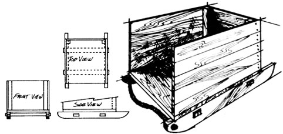

My family and I have a variety of critters on our farm, and they process a lot of natural food into a lot of natural compost material. That's fine . . . but every season, it's an exhausting job to move all that manure from the animals' quarters to the garden.
Well, next year I'm going to try something new: compost boats or sledges like the one in the drawing. I'll make two or three of the movable bins, locate one each by the goat house, pig yard, and chicken pen, and use the tractor to pull box and contents to the garden when the fertilizer is ready.
Although this design may need modification (and does require the use of a tractor or horse), I feel that the basic idea is economical, practical, and labor-saying.
|
 |
|
|